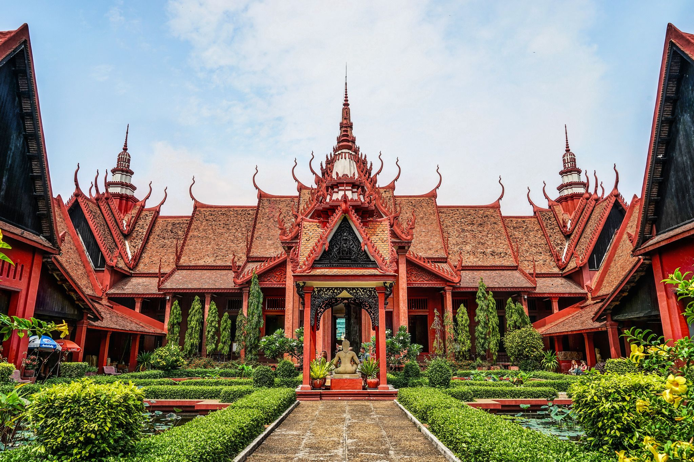
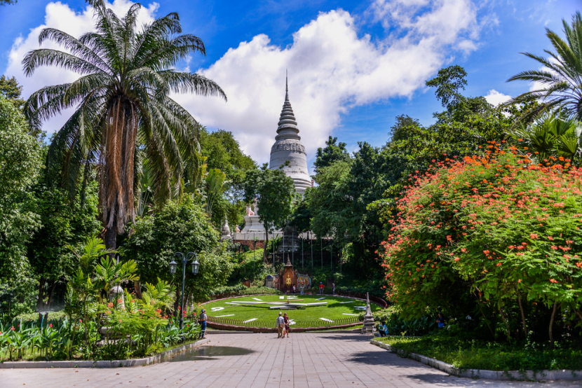
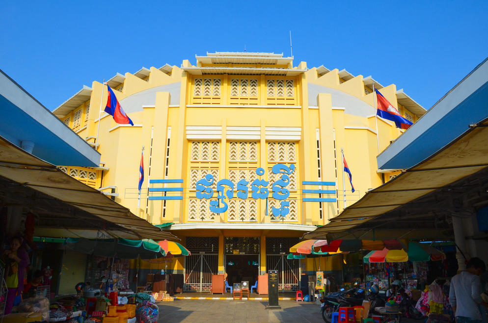
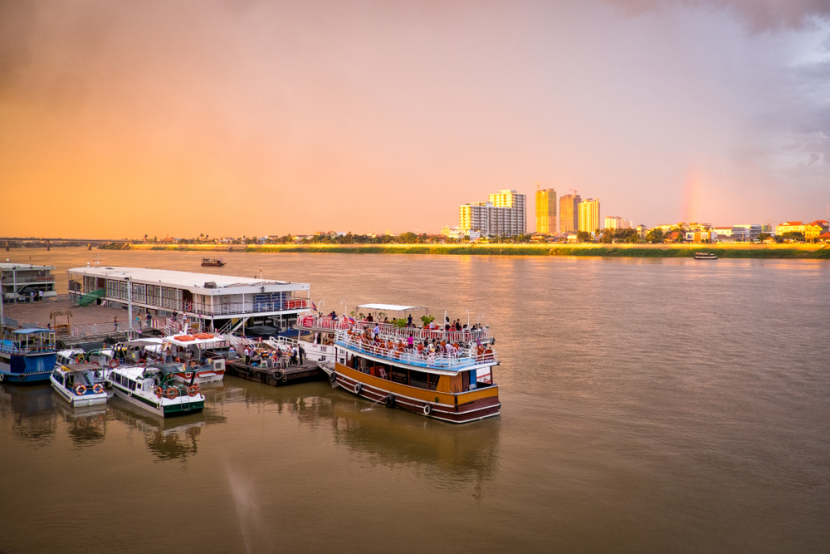
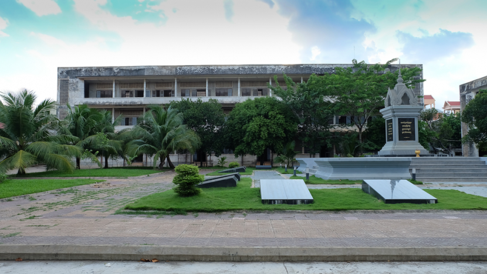

Independence Monument, or Vimean Ekareach as it is referred to in Khmer, is a majestic structure that dominates Phnom Penh city centre. Independence Monument was primarily erected to mark the liberation of the country from the French, who ruled Cambodia for almost a century from 1863 to 1953.Built in 1958, and inaugurated in 1962 during the regime of Sangkum Reastr, this monument also serves as a proud testament to commemorate people who sacrificed their lives for the welfare of the country. The monument is captivating for its cool, serene atmosphere, which in turn makes it a much sought-after destination.Phnom Penh is the vibrant bustling capital of Cambodia. Situated at the confluence of three rivers, the mighty Mekong, the Bassac and the great Tonle Sap, what was once considered the 'Gem' of Indochina. The capital city still maintains considerable charm with plenty to see. It exudes a sort of provincial charm and tranquillity with French colonial mansions and tree-lined boulevards amidst monumental Angkorian architecture. Phnom Penh is a veritable oasis compared to the modernity of other Asian capitals. A mixture of Asian exotica, the famous Cambodian hospitality awaits the visitors to the capital of the Kingdom of Cambodia.
The Phnom Penh nightlife buzzes with energy, so long as you know where to look. So, whether you want to find where the locals eat, go or do, here are the 10 best things to do in Phnom Penh at night to end the day with a smile! The night can’t begin without food, of course. If you’re hungry to taste authentic Cambodian food, some local favorites to check out are Romdeng (រំដេង), Meatophum (មាតុភូមិ) and Mok Mony Restaurant. You can also eat delicious local food and make an impact at Friends the Restaurant, where profits go to support the education of children in need. For high-end options, Malis and One More Restaurant are popular.If snacking on tasty street food sounds more up your alley, then Phnom Penh also won’t disappoint. You can find food carts around the parks near Independence Monument, along the riverside (Sisowath Quay) and at local wet markets, such as Phsar Kandal and Russian Market (Toul Tom Poung). Food hygiene can be a problem though, so always order something straight out of the pot or pan to be safe.At the riverside also sits Phnom Penh’s only night market. While small, it makes for a pleasant stroll through. You’ll find vendors selling a variety of products and goods, which you can bargain for. There are also street food stalls, plus a spacious place to sit and eat. Sometimes, you may catch concerts or local performances too. It’s a nice chilled place to just soak in the local atmosphere.
Across the night market and right next to Titanic Restaurant, there is a parking space leading to a small port. After passing through the gate, follow the metal ramp down to where the boats are docked. On the right, you’ll find boats that take you on a 40-minute cruise to the other side of the river bank and back. Whether you’re gazing at the sunset or twinkling city lights, it’s a lovely way to wind down and reflect on your day.The service starts at around 5 PM, and the last boat leaves at 8 PM. The price for foreigners is 5$.Every night from 7 to 8 PM at the National Museum, you can catch the sublime performance of Cambodian classical and folk dances. Drawing inspiration from literature, nature and local life, the dances are a fantastic glimpse into Cambodian culture. The show is hosted by non-profit Cambodian Living Arts, aiming to support local artists keeping the traditional dance alive. You can book the tickets here.At Sovannaphum Art Association, artists are keeping two iconic Cambodian art forms alive. One is Sbek Thom, a unique form of puppetry dating back since before the Angkorian period. Another is Lakhon Khol, a masked dance and lively drama adaptation of the Cambodian epic Ream Ker. Performances take place every Friday and Saturday from 7 to 8 PM at Sovannaphum Theatre.Classical and contemporary meet in the dances of Prumsodun Ok & NATYARASA. The first all-gay dance company in Cambodia, it’s led by Prumsodun Ok whose vision is to revive and reimagine Cambodian classical dance for modern times. What’s more, the troupe is rapidly making waves in Asia and Europe. They perform every weekend at Counterspace Theatre (Java Creative Café Toul Tom Pong). If you want to see them in action, make sure to book your tickets beforehand.
Located near the Royal Palace, Cambodia's National Museum offers a charming setting for a stunning collection of ancient Khmer art. Predominantly constructed of sandstone, the sculptures date from both the Angkorean and pre-Angkorean eras. These exhibits are complemented by more recent examples of Cambodian art. The museum is housed in a terra-cotta-roofed structure of traditional Cambodian design, which was built between 1917 and 1920. Apart from artistic treasures, the building is also home to a large colony of Cambodian freetail bats. The colony has lived in the building's rafters for years and is believed to be the largest group of bats living in a man-made structure anywhere in the world. But visitors need not worry about becoming a guano target, as the Australian government reinforced the ceiling of the museum in 1997. The only time you are likely to see the bats is when they fly from the roof en masse at dusk each evening.The museum houses one of the world's largest collections of Khmer art, including sculptural, ceramics, bronzes, and ethnographic objects. The Museum’s collection includes over 14,000 items, from prehistoric times to periods before, during, and after the Khmer Empire, which at its height stretched from Thailand, across present-day Cambodia, to southern Vietnam. The Museum buildings, inspired by Khmer temple architecture, were constructed between 1917 and 1924, the museum was officially inaugurated in 1920,and renovated in 1968.
Wat Phnom, Phnom Penh the namesake and symbol of the capital city of Phnom Penh, sets prominently atop an artificial 88.5 ft (27 meter) hill (or 'Phnom') near the Tonle Sap River in the northeast section of the city. Legend relates that Daun (Grandmother or Lady) Penh, a wealthy widow, found a large koki tree in the river. She hoped to use it for a house, but inside a hollow of the tree she found four bronze statues of the Buddha (and possibly a stone statue of Vishnu); she erected a small shrine on the site to protect them. Eventually this became a sacred site and sanctuary where people would make wishes and pray for good luck and for success in school or business. Another account of the founding of the wat suggests King Ponhea Yat (r. 1405-67), built the sanctuary (vihara or vihear) when he moved his capital from Angkor to Phnom Penh in 1422. The prominent stupa immediately west of the sanctuary, or vihara (vihear) contains the ashes of the king.The complex is oriented toward the east, where a broad staircase, flanked by nagas, guardians and lion-like figures, leads directly to the vihara. The figures are all of recent vintage. This east entry is also usually filled with vendors, beggars, charlatans, a variety of children-all creating a sometimes annoying but generally a friendly and almost circus-like atmosphere.To add to this feeling, one can even encircle the base of the hill on Sam Bo, the 46 year old elephant that has been plying the route since 1983.The sanctuary itself has frequently been rebuilt: in 1434, several times in the 19th century and in 1926. There were, of course, major renovations necessitated by the rule of the Khmer Rouge and Pol Pot. That era of the late 1970s had a devastating impact not only on Wat Phnom, but also on the personnel and the properties of Buddhist communities and on virtually all other communities throughout Cambodia. Many parts of the sanctuary were repaired; new statues and shrines were added, while the sanctuary has been covered with new plaster and paint that mask the at least 600 history of the wat. The interior has a central altar complex with a large bronze seated Buddha surrounded by other statues, flowers, candles and items of devotion and worship. The walls are covered with paintings, especially of Jataka stories of the Buddha's earlier reincarnations before his enlightenment. There are also murals depicting stories from the Reamker, the Khmer version of the Ramayana. Of greatest significance are the older paintings in the upper portions of the building, though they are disintegrating and darkened by the smoke from incense (and are difficult to photograph). It is hoped that somehow these will be cleaned and restored rather than just overpainted. The newer paintings in the bottom tiers are somewhat balanced, traditional and modern.At the southwest corner of the vihara, between the vihara and the stupa, there is a small shrine to Daun Penh. The front is often crowded with the faithful bringing their prayers and food offerings to the woman deemed responsible for the founding of the wat; the shrine is considered to be especially helpful to women.There are numerous other shrines and other activities on or at the base of the hill. There are gardens that the French laid out in the late nineteenth century and shrines that reflect Daoist, Confucian, Hindu beliefs, as well as Vietnamese interests reflected in the shrine to Preah Chau. No attempt has been made to chronicle these other elements in this account of Wat Phnom.
The Phnom Penh Central Market is housed in a colonial-style building in the heart of the Cambodian capital. Its Khmer name Psar Thmay translates as "new market", although it is more commonly referred in English as Central Market.The Psar Thmay was built in 1937 during the French colonial period, in Art Deco style, and is painted bright ochre. It consists of four wings dominated by a central dome. Within the four wings and around the compound outside are on sale almost anything you can think of, including electronic equipment, clothing, watches, bags, suitcases, dried and fresh foodstuff, jewellery, clothes from cheap t-shirts to krama (Khmer scarves), pseudo-antique, books including photocopied travel guides and lots of souvenirs.he Central Market (Khmer: Psah Thom Thmey or New Grand Market), is a large market constructed in 1937 in the shape of a dome with four arms branching out into vast hallways with countless stalls of goods. It is located in Cambodia's capital city, Phnom Penh. When it first opened in 1937, it was said to be the biggest market in Asia, and today it still operates as a market. From 2009 to 2011, it underwent a US$4.2 million renovation funded by the French Development Agency.The market opens from 7:00 AM to 5:00 PM, and it is, for tourists, a 'must see' stop. Most tourists visit this market because they want to see the extensive amount of products that are offered for bargain. The four wings of this gigantic yellow-coloured dome are teeming with numerous stalls that sell goods ranging from gold and silver, antique coins, money exchange, men's and women's apparel, clocks, books, flowers, food, fabrics, shoes, souvenirs, fish, seafood, dessert, luggage, and countless other products. 
The mighty Mekong River is indeed, in more ways than one, the lifeline that runs through the heart of southeast Asia. Rising from the Himalayan mountain of Tibet, it trickles and gradually winds its way through China, Myanmar, Thailand, Laos, Cambodia and Vietnam before spilling into the South China Sea. In its course, the mighty Mekong meets the Tonle Sap Lake which is the largest lake in South East Asia and effectively, the heartbeat of Cambodia. The annual pulsation of the flooding seasons has been a huge contribution to Cambodia’s existence for millenniums.When in Cambodia, tourists are urged to explore these timeless waterways by taking a cruise up the mighty Mekong and discover the amazements at the center of the Tonle Sap Lake. There is a huge community living on the lake itself. This is definitely a gentle and wonderful way to experience local life that has remained unchanged for centuries. Tourists can stop off to have a cuppa at a floating café in the middle of the lake, watch the small communities along the riverbank, visit remote temples far from the beaten tourist paths and enjoy the river breeze.ourist boats of varying size and quality wait along the riverfront, usually between Street 144 and Street 130, and at the Passenger Port near Street 104. Just look for the cluster of boats and advertising placards. From about 4PM-5:30PM you can get a sunset cruise for $4-5$/person on a shared tour boat. If you want a private boat, or arrive anytime other than the sunset hours, boats run about for $10-$15/hour for a whole boat and offers a standard tour itinerary. Bring your friends and split the price. Prices go up for larger boats.
The Tuol Sleng Genocide Museum is a museum in Phnom Penh, the capital of Cambodia. The site is a former high school which was used as the notorious Security Prison 21 (S-21) by the Khmer Rouge communist regime from its rise to power in 1975 to its fall in 1979. Tuol Sleng (Khmer [tu?l slae?]) means "Hill of the Poisonous Trees" or "Strychnine Hill".Formerly the Chao Ponhea Yat High School, named after a Royal ancestor of King Norodom Sihanouk, the five buildings of the complex were converted in August 1975, four months after the Khmer Rouge won the civil war, into a prison and interrogation center. The Khmer Rouge renamed the complex "Security Prison 21" (S-21) and construction began to adapt the prison to the inmates: the buildings were enclosed in electrified barbed wire, the classrooms converted into tiny prison and torture chambers, and all windows were covered with iron bars and barbed wire to prevent escapes.From 1975 to 1979, an estimated 17,000 people were imprisoned at Tuol Sleng (some estimates suggest a number as high as 20,000, although the real number is unknown). At any one time, the prison held between 1,000–1,500 prisoners. They were repeatedly tortured and coerced into naming family members and close associates, who were in turn arrested, tortured and killed. In the early months of S-21's existence, most of the victims were from the previous Lon Nol regime and included soldiers, government officials, as well as academics, doctors, teachers, students, factory workers, monks, engineers, etc. Later, the party leadership's paranoia turned on its own ranks and purges throughout the country saw thousands of party activists and their families brought to Tuol Sleng and murdered. Those arrested included some of the highest ranking communist politicians such as Khoy Thoun, Vorn Vet and Hu Nim. Although the official reason for their arrest was "espionage", these men may have been viewed by Khmer Rouge leader Pol Pot as potential leaders of a coup against him. Prisoners' families were often brought en masse to be interrogated and later murdered at the Choeung Ek extermination center.In 1979, the prison was uncovered by the invading Vietnamese army. In 1980, the prison was reopened by the government of the People's Republic of Kampuchea as a historical museum memorializing the actions of the Khmer Rouge regime.The museum is open to the public, and receives an average of 500 visitors every day.